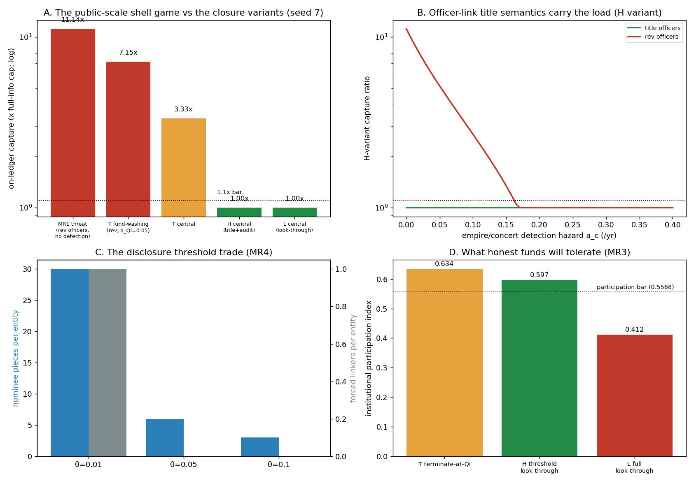

In plain language
Companion to RESULTS - v38.0 Multi-Root Ownership.md. July 18, 2026. Written jargon-compliant from birth under the July-18 house rule: every term defined, with analogies. Every number traces to results_v38.json; this is a model of the design, not a forecast.
The question in one sentence
EDEN's new ownership rule says "follow the chain of who-owns-whom up to the actual humans" — but what happens when the chain leads to a publicly traded company with a million shareholders trading by the second, or to an index fund that owns 6% of everything, which is owned by a pension, which is owned by ten million savers? Follow the chain and you drown; stop following it and you've built a hiding place. This simulation tested three ways to draw that line — and let pre-written pass/fail bars pick the winner, so the rule is chosen by evidence, not taste.
The three candidate rules (and who they're named for)
- T — "stop at the fund." Once the chain reaches a licensed, deposit-backed fund (a qualified intermediary: think of a registered brokerage or index fund that has passed the same identity checks a bank runs), stop. The fund itself is the accountable owner-of-record.
- L — "look through everything." Never stop. Every fund must reveal its holders, and their holders, all the way down to every last human saver.
- H — "look through the big fish only." A fund must name any ultimate owner who holds 5% or more of a company (with a registered link, same as any big owner). The ocean of tiny holders below 5% — the "float," the mass of small churning positions — stops at the fund, which is itself bonded and identified.
What we found
1. The threat is real: the shell game goes public (11×). In v36 we showed a hidden owner using 25 empty shell companies to multiply their income cap 25 times, and we closed it. Here's the public-market version: a whale who wants secret control of 25 real companies buys each one in six slices of 4.9% — each slice just under the 5% disclosure line, each held by a nominee (a straw owner — someone paid to pretend the stake is theirs). No slice ever registers. The whale then runs the companies through officer-nominees (straw executives). If officer registrations are the revocable kind — reassignable at will, like a parking permit — the whale captures 11.14× their lawful cap. Same disease as v36, new suit.
2. The single most important design choice: officer registrations must be deeds, not permits. v36's central lesson was that an ownership registration must be the legal title — so a straw owner can walk off with what they're fronting, which is exactly why nobody fronts. This run shows the same rule must apply to officers (the people registered as running a company). Make the officer registration a deed to the controls — a defecting straw executive legally keeps the helm — and the whale's whole empire scheme stops paying even with zero detection effort: the fear of your own puppets, plus the sheer cost of buying six slices per company, kills the margin on its own. With permit-style officer registrations instead, you'd need to catch empires at a 1-in-6-per-year rate just to break even. One word in the rulebook — title — does the work of an entire audit department.
3. The winner is H, "look through the big fish only." Judged on two pre-written bars — does it stop the cheating? and will honest funds actually show up? — only H passed both:
- T ("stop at the fund") failed on cheating — not the way you'd guess. A real fund holding many companies hides nothing: the cap-counting simply treats the fund as the owner and adds its holdings together (stopping the chain doesn't break the counting — it just re-roots it at the fund). The hole is fake funds: a whale who sets up one sham "fund" per company gets 3.3× at normal audit levels, and 7.2× if fund audits are weak. T's safety is a bet on how good fund inspection is. Bad bet.
- L ("look through everything") failed on participation — forcing funds to expose their entire client books is a privacy demand real institutions won't wear: modeled participation fell to 0.41, far below the bar. You'd win the battle and lose the capital.
- H passed both: cheating held at 1.00× (nothing gained), participation at 0.60 (above the bar even when we doubled how much funds hate disclosure). It also matches how the real world already works — most securities law already forces disclosure at about the 5% line, so EDEN isn't asking institutions for anything stranger than what regulators already ask.
4. Where exactly to put the line? We swept the disclosure threshold. At 1%, a would-be hider needs 30 slices per company (very expensive); at 10%, only 3. But lower thresholds also force more honest holders to register. At 5% the model is comfortable — though we're honest that our pretend shareholder lists understate how concentrated real markets are (real index funds sit at 5–10% of nearly everything), so the final number should be calibrated against real holder data during the pilot, not against this model.
5. Wolf packs: measured, and deliberately left alone. What about five genuinely different rich people agreeing to act together — no hidden ownership, just coordination? Measured result: they gain exactly nothing against the ownership caps, because they already lawfully hold five separate caps; agreeing doesn't mint a sixth. Could their coordination be harmful anyway? Possibly — as a governance or market-power problem, which EDEN's governance defenses (the jury systems, the voting caps — tested back in v15/v17) exist to handle. What we will not do is aim the ownership gate at the behavior of real individuals — EDEN's constitution forbids building profiles of people, and "you two agreed too much" is a profile. Same honest pattern as dropping the search-logging idea: measure it, say what it isn't, hand it to the layer that owns it.
6. The money that leaks around the edge goes somewhere accountable. Even a hidden empire can't get paid inside EDEN (no registration, no payout — that rule is doing exactly what it was built for). Its profits can only exit as ordinary dividends through the fiat bridge — the doorway between EVE and regular money, where companies are fully identified and dividends are legally traceable. In other words: what evades EDEN's registry lands in the lap of ordinary securities law, which has spent ninety years learning to follow exactly that money. EDEN doesn't have to catch everything; it has to make sure everything uncaught surfaces where someone else can.
7. And the dynasty wall still doesn't care. Fourth simulation in a row: we fed the worst capture rate this attack can generate into the inheritance model, and family-fortune persistence stayed at the pure-chance level (~10%). Assets still die with their human anchor and their fixed term. Hiding control was never a way around mortality.
The bottom line
Public companies and funds don't break the ownership rule — they just tell you where to stop following the chain: at 5% owners (who must register, through any number of layers) and at bonded, identified funds (for the small stuff below the line). Make officer registrations deeds rather than permits, keep a statistical eye out for suspiciously synchronized company empires, and let securities law keep the residual it already owns. All of it is now written up as the DR-21 proposal for the owner to ratify.
Words used here (quick reference)
The float — the mass of small, constantly traded shares of a public company; no single meaningful owner. Qualified intermediary (QI) — a licensed, deposit-backed, identity-checked fund or brokerage that can stand as an accountable owner-of-record. Nominee / straw owner — a person paid to pretend a stake is theirs. Officer-nominee — the same trick applied to running the company: a straw executive. Title vs revocable registration — a deed (whoever holds it is the owner/controller; only they can pass it on) vs a permit (the company can reassign it at will). Deeds make straw men dangerous to their principals — that's the defense. Disclosure threshold (θ) — the ownership percentage above which you must register; 5% here, rhyming with existing securities law. Empire/concert detection — the aggregate-level statistical flag for many companies moving in suspicious lockstep; it re-weights audits, it never profiles individuals. Fund-washing — laundering control through sham "funds" to exploit a stop-at-the-fund rule. Wolf pack — genuinely separate people coordinating without shared ownership. Fiat bridge — the identity-checked doorway between EVE and ordinary money, where dividends become legally traceable. Cap — the per-person limit on royalty-pool capture (20× the median), counted across everything one human controls. Aggregation — counting all commonly-controlled entities as one for that cap. Anchored — tied to one accountable, verified, living human (the v36 tournament-wristband idea: unique and mortal, name not required).
Written July 18, 2026 (Fable 5, owner-directed). Honest limits: control here is a simple threshold, not a shareholder-voting model; audit and detection rates are price dials whose real-world costs only a pilot can supply; our shareholder lists are stylized. Status: the rule set is DR-21, PROPOSED — evidence in hand, awaiting owner ratification.
Figures

Technical results
Run: July 18, 2026. Spec: v38 SPEC - Multi-Root Ownership (registered).md — bars MR0–MR7 fixed before code. Engine: multiroot_ownership_sim.py (deterministic; RNG = pool, holder-size, and chassis draws, seeds 7 + 11; import-guarded). Committed: results_v38.json, fig_v38_multiroot.png. Anchors: the committed v36 cell re-ran in isolation with its full chain (v36 → v35 → multigen) and reproduced 1.197 / 0.1723 / 24.67 exactly; the v38 pool/gate re-implementation equals blind 24.67 and share 0.00055 exactly; the v35 chassis port equals 10.5 exactly; the participation machinery reproduces the committed 0.6568 at zero disclosure. kL follows the committed v36 fork convention (title 0.6 / revocable 0.1). Every number below traces to results_v38.json. Produced by Claude Fable 5, owner-directed [FABLE] cell.
Verdict in one line: the public-scale shell game is real (a whale assembling hidden control of 25 public entities from sub-threshold nominee pieces captures 11.1× the single cap when officer links are revocable and nothing watches for empires) — and the fork picked the hybrid: threshold look-through (H) is the only closure variant that passes both bars (evasion 1.00×, participation 0.597), with terminate-at-QI (T) failing on fund-washing (3.3× at central, 7.2× when the institutional audit weakens) and full look-through (L) failing on institutional participation (0.412); the load-bearing discovery is that officer links must be title-class — with title officers the on-ledger channel closes at zero empire-detection (piece-assembly costs plus officer title-risk do all the work, a_c* = 0.0), while revocable officers need 0.162/yr of empire detection to compensate; wolf packs of genuine humans multiply nothing the ownership gate polices (increment 0.0 — a governance/market-power question, filed as the scope boundary); and the dynasty wall doesn't move (−0.2pp at the worst-variant capture). 8/8 bars PASS.
Bar summary (8 PASS)
| Bar | Registered | Measured (seed 7; seed 11 in JSON) | Result |
|---|---|---|---|
| MR0 anchors | v36 isolated re-run exact; pool/gate exact; v35 chassis exact; participation regression | 1.197 / 0.1723 / 24.67 exact; blind 24.67, share 0.00055 exact; R2 10.5 exact; part. 0.6568 ✓ | PASS |
| MR1 threat real | H at θ=0.05, a_c=0, revocable officers: ratio ≥ 10× | 11.14× (seed 11: 11.14) — plus an off-protocol residual of 16.1× cap-flow handed to the bridge/legal layer | PASS (threat demonstrated) |
| MR2 closure | title officers + a_c=0.15: ratio ≤ 1.1×; boundary reported | 1.000×; a_c*(title) = 0.0 — closed with no empire detection at all; a_c*(rev) = 0.1621 | PASS |
| MR3 the fork | ≥1 variant passes evasion ≤1.1× AND participation ≥0.5568 | T: 3.335× / 0.634 — fails evasion. L: 1.0× / 0.412 — fails participation. H: 1.000× / 0.597 — passes both. | PASS — H survives, as registered |
| MR4 threshold | workable region interior to θ ∈ | pieces per entity 30 / 6 / 3; forced linkers 1 / 0 / 0; H holds ≤1.1× at every θ (title) | PASS (with the honest caveat in F5) |
| MR5 wolf pack | coordination increment ≤ +0.1× over k lawful caps | 0.0 at k ∈ {5, 10, 25} — scope boundary filed | PASS |
| MR6 dynasty | worst-variant capture into committed R2: ≤ +0.5pp vs 10.5 | capture 0.578 → 10.3 / 10.0 (−0.2 / −0.5pp) | PASS |
| MR7 harness | byte-identical double run; seeds agree | three byte-identical runs (2 dev + committed vault, sha256); pool gap 0.0000, chassis gap 0.3pp | PASS |
Findings
F1 — The public-scale shell game is real, and it's the v36 attack wearing a stock certificate (MR1). A whale wanting control (30%) of each of 25 public entities assembles it from 6 nominee-held pieces per entity, each at 4.9% — just under the disclosure threshold, so no piece ever links. Control is exercised through officer-nominees; with revocable officer links and no empire detection, the whale's on-ledger capture is 11.14× the single cap (mr1_threat), and the undetected empire's off-protocol dividend flow (16.1× cap-flow, g-discounted) routes through the KYC'd bridge where it is legally attributable — reported, not counted, because the bridge/legal layer owns that residual. The mechanism is identical to v36's nominee finding: what the threshold exempts from linking, nominees can hold invisibly.
F2 — Officer-link title semantics carry the entire load (MR2, the design discovery). With officer links title-class (a defecting officer-nominee keeps the coordination rights — the v36 deed logic applied to control instead of ownership), the whale's per-entity net goes negative at central dials even with zero empire detection: a_c*(title) = 0.0 (mr2_closure). Two costs do it: the officer-nominee's title-risk price (κ_L = 0.6, the committed v36 convention) and the structural piece-assembly cost (6 pieces × f_p). Revocable officer governance re-opens the hole and needs 0.162/yr of empire detection to compensate — the v36 lesson, re-learned at the control layer: revocable anything is the vulnerability; title semantics are the defense. DR-21 should extend DR-19's title rule from owner links to officer/controller links explicitly. (The empire/concert audit still matters — it is what bounds the off-protocol residual, 16.1× undetected → 3.6× at central a_c — but it is belt-and-suspenders for the on-ledger channel, not its keystone.)
F3 — The fork picked H: threshold look-through, as registered (MR3). T (terminate-at-QI) fails on fund-washing: closure that stops at any bonded intermediary re-roots aggregation at the fund, so a whale needs one captured QI per entity — and at central dials that costs less than it yields (3.335×; the captured QI's own governance is the weak point, since the whale controls it through the same nominee machinery). T is also fragile exactly where it shouldn't be: at a_QI = 0.05 the ratio climbs to 7.15× (mr3_variants.T.fragility_rev_by_aQI) — its safety is an assumption about institutional audit quality, not a structure. L (full look-through) fails on participation: requiring funds to expose their full holder graphs prices institutional disclosure aversion at d_med = 0.20 → index 0.412, far under the 0.5568 bar — you keep the gate and lose the capital. H passes both (evasion 1.000× with title officers; participation 0.597, holding ≥ 0.532 even at 2× disclosure aversion): intermediaries must name ultimate holders at ≥ θ per entity, the sub-θ float terminates at the (bonded, KYC'd) intermediary, and the empire attack against the exempt float is priced out by F2's machinery.
F4 — Termination does not break aggregation; it re-roots it (the T analysis's useful by-product). A single intermediary holding controlling stakes in many entities does not multiply caps under any variant — the entities aggregate to the intermediary's node. Fund-washing therefore requires one intermediary per entity, which is why it is expensive and auditable. This clears up a natural confusion: the danger of terminate-at-QI is not "funds hide empires" (they can't — aggregation follows them) but "fake funds are cheaper than real audit coverage."
F5 — The threshold trade is real but lopsided at these dials (MR4, honest caveat). Lowering θ from 0.10 to 0.01 raises the attacker's assembly from 3 to 30 pieces per entity (structural cost ×10) while the honest burden barely moves (forced linkers per entity: 1 / 0 / 0 across θ under the stated lognormal holder distribution — mr4_threshold). The interior-trade bar passes formally, but the burden axis is weak at these dials: a real public float has institutional holders at 5–10% (index funds), which the stated σ_h = 1.5 / 10,000-holder distribution understates. The honest reading: θ = 0.05 is comfortable and rhymes with real-world disclosure law; θ = 0.01 buys extra assembly cost nearly free in this model but would force-link every index fund position in reality — calibrate against real holder data at the pilot, not against this distribution.
F6 — Wolf packs multiply nothing this gate polices (MR5, the scope boundary). k genuinely distinct humans coordinating hold exactly the k caps they lawfully own — coordination adds strategic direction, not cap multiplication (increment 0.0 at k ∈ {5, 10, 25}). Filed per the read-logging-severance pattern: concert-of-genuine-humans is a governance and market-power question (v15/v17 own that layer), and chasing it with the ownership gate would require person-level behavioral aggregation — constitutionally off-limits (§6.5). The ownership gate polices hidden common ownership; it should refuse to police agreement.
F7 — The dynasty wall doesn't move (MR6). The worst equilibrium capture any v38 arm produces (0.578 — revocable officers, zero detection) wired into the committed v35 chassis: persistence 10.3 / 10.0 (−0.2 / −0.5pp vs the committed 10.5). Fourth consecutive cell confirming v35's defense-in-depth: the term + mortal-anchor runoff outruns every capture rate the ownership layer can generate. Cap enforcement and dynasty prevention remain independent walls.
Honest limits
Reduced-form throughout, as registered: control is a threshold event (stake ≥ c_ctl ⇒ control), not a voting model; officer-nominee, empire-detection, QI-audit, and piece-carrying economics are hazard rates and price dials (the committed v36 forms), not strategic games; a_c and a_QI are design candidates whose real-world cost no desk run can price — the boundaries (0.0 / 0.1621 / the T fragility curve) are the deliverables, and audit-economics remains the named v12-class successor; the off-protocol residual is reported but its legal-layer disposition (13D/G-analog enforcement at the KYC'd bridge) is asserted context, not modeled; the holder-size distribution is a stated lognormal that understates real institutional concentration (F5); real fund regulation, custody law, and acting-in-concert doctrine are outside the protocol surface; wolf-pack governance/market-power harms are explicitly not addressed here. Findings are existence/ordering/boundary-location under stated dials, not forecasts.
Recommendation (for the owner to react to — DR-21 candidate)
Adopt H — threshold look-through — as the closure rule for intermediated ownership, with officer links promoted to title-class. Concretely: (1) qualified intermediaries (bonded, KYC'd funds) must pass through — name, with links — any ultimate beneficial holder at ≥ θ = 5% of an entity; the sub-threshold float terminates at the intermediary, which is a legitimate accountable root (F3/F4); (2) officer/controller links are title records — DR-19's deed semantics extended from owning to controlling; this single choice closes the on-ledger empire channel at zero marginal audit cost (F2); (3) fund the empire/concert flag at the aggregate level anyway — it is what compresses the off-protocol residual (16× → 3.6×) that the bridge's legal layer then owns; (4) set θ = 5% now (rhymes with real disclosure law; comfortable in-model) and calibrate against real holder data at the pilot (F5's honest caveat); (5) record the wolf-pack scope boundary explicitly: coordination among genuine humans is governance/market-power territory — the ownership gate refuses it by design (F6). Roads not taken (T, L, revocable officers, θ endpoints) with reasons in DR-21. Successor cells: audit-economics pricing (standing, v12-class), real holder-distribution calibration (pilot), and a voting-power model if the pilot's governance layer wants control modeled as more than a threshold.
Files
v38 SPEC - Multi-Root Ownership (registered).md— bars MR0–MR7 before codemultiroot_ownership_sim.py— anchor chain + empire/QI/wolf-pack modules (import-guarded, deterministic)results_v38.json— every number above;fig_v38_multiroot.png— four panelsPLAIN LANGUAGE - v38.0 Multi-Root Ownership.md— jargon-compliant companion (house rule, from birth)
Run and written July 18, 2026, by Claude Fable 5 (owner-directed [FABLE] cell). Verification: the committed v36 cell re-ran exactly in isolation with its full anchor chain (MR0a); the engine ran three times — twice in the development sandbox, once committed in this folder — all three byte-identical by sha256 (JSON + figure); numbering checked against the folder max (v37) before registration. All 8 bars pass; MR3's registered expectations (T fails evasion, L fails participation, H survives) were confirmed rather than refuted. Bars unmoved.
Raw data